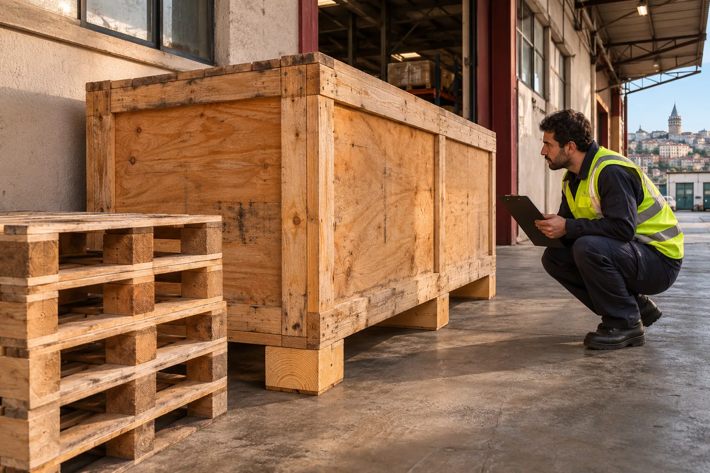

A German buyer orders pumps from İzmir. The pumps arrive at the loading bay in a plywood case. Someone has nailed solid pine runners underneath so a forklift can lift it. The buyer's order specified plywood. The packer's certificate describes plywood. Yet the shipment contains another material which matters when it enters the European Union. Who should spot the runners, and what can the team do while the case is still at the factory?
Wood packaging can trigger plant health controls even when the cargo inside is metal, glass or ceramics. For shipments from Türkiye to the EU, start with the European Commission’s requirements for wood packaging and dunnage. Then check the actual packing design, the destination and any additional measures applicable to the goods or route. An enquiry about wooden furniture sold as merchandise poses a different question. This guide concerns material used to support, protect or secure another product in transit.
Inspect the base, not just the walls
Walk around an empty version of the proposed case with the packer. Identify the side panels, lid, frame, runners, pallet blocks, chocks and loose wedges. Include temporary battens added to stop a heavy item shifting inside the truck. Freight teams often call this last group dunnage. It can disappear from view once the cargo is strapped down. Ask who supplies it, since the factory, haulier and consolidator may buy their timber from three different sources.
The Commission identifies exemptions for very thin wood, six millimetres or less, and packaging made entirely from qualifying processed material such as plywood. Its guidance also sets out debarking, approved treatment and official marking requirements for regulated wood packaging. A laminated panel mounted on thick raw timber supports does not make the supports exempt. Examine each component when the design mixes materials. Resist the temptation to classify the whole case from its most visible surface or its largest purchasing line.
A practical packing drawing can be simple. Colour the processed sheets in grey, mark solid components in brown and add the dimensions and material description beside each arrow. Put the revision date on the drawing and ask the workshop to retain an example photograph. If a substitution becomes necessary because the specified skids will not support the weight, have the engineer check load capacity and the export lead review the changed wood before construction continues. Plant health compliance and mechanical strength address different risks.
Identify the person authorised to mark the packaging
The IPPC standard ISPM 15 establishes an official mark and a system overseen by national plant protection organisations. Türkiye’s implementation notice describes the domestic framework for treatment, marking and traceability. Select a provider authorised for the relevant activity and ask how it ties a particular unit to its production records. An exporter may purchase compliant packaging. Paying for a crate does not itself authorise the exporter to apply an official mark.
Read the mark in context. It identifies the issuing country, the responsible producer or treatment provider through its assigned code, and the approved treatment. A supplier's logo, a recycling emblem, a batch label and a structural load rating serve other purposes. A packing list from the seller may identify which unit went into a consignment. It cannot replace the official mark on regulated packaging. A photograph should show both the mark and enough surrounding material to locate it on the actual unit.
Consider a shipment of twelve identical cases. The packer forwards a sharp close-up of one marking but cannot tell which case it belongs to. Ask for a wider frame showing the case number alongside the marked component and retain a packing register. For divisible consignments, make sure the evidence remains intelligible when six cases leave today and six depart next week. Do the same when the customer books a last-minute switch from road to air freight and the freight handler proposes a lighter replacement base.
Decide what changed on a used pallet
A purchaser may see a dark mark on a used pallet and assume it can travel indefinitely. Under the international standard, a compliant unit that remains unaltered can generally be reused without fresh treatment or marking throughout its life. What happened since the mark was applied matters. Evidence of repair, replacement or reconstruction changes the question. Fresh timber can differ in colour, grain or nail pattern, although appearance alone cannot establish its source or treatment.
In the standard's repair category, up to approximately a third of the components have been replaced. A repair using regulated solid wood calls for appropriately treated replacement material and individual marking of added components under the standard, subject to the national authority's approach. Remanufacture involves replacement of more than approximately a third; the rebuilt unit needs its old marks permanently removed, fresh treatment and a new mark under official control. Treat the fraction as a way to identify which process to review with the authorised provider. It gives a warehouse no licence to stamp a repair.
An example illustrates the decision. A pallet pool delivers a marked platform with a cracked corner. A night-shift worker offers to fit a new board from the workshop's general stock. Stop and choose an intact compliant replacement or return the damaged item to an appropriate provider. Keep the damaged unit out of the export stack. If it has already been repaired, explain what is known, including where the board came from. When a repair history cannot be substantiated, selecting a different pallet can be faster than holding a loaded truck while seeking proof.
Give the packer instructions that cover late additions
Put the destination, agreed packaging design and approval process in the order issued to the packer. Name the person who can approve a changed design outside office hours. Ask the forwarder to extend the same requirement to subcontractors adding bracing at a consolidation depot. A contract between buyer and manufacturer can allocate costs, but its terms will have little operational effect on a driver who has never seen the instructions. Give that person a usable contact and a clear release decision.
Consider stone tiles packed vertically on a frame. The frame itself has compliant timber. At collection, the driver notices lateral movement and adds loose pieces recovered from a domestic delivery. The added pieces travel with the shipment and require assessment in their own right. Plan suitable blocking material in advance. Specify who checks the arrangement for safe transport, who supplies replacements, where the extra material is stored and when the final photograph is taken. A mark hidden on the main frame tells you nothing about the loose wedges.
A procurement clause should settle reasonably foreseeable costs without promising the result of an official inspection. Who pays for compliant replacement packaging before collection? Who authorises storage if an authority holds the goods? Can an importer arrange supervised repacking, and whose approval is needed for additional expense? Agree a rapid notice channel and basic documentary support for invoices. Preserve contractual rights against the responsible party while allowing the team on the ground to comply promptly with official directions.
Run a release check before the vehicle is sealed
Divide the check between the people who can see the relevant facts. The packer confirms materials, construction and provenance. The loading supervisor compares the finished units with the drawing. The forwarder checks any timber added after collection. The importer confirms the entry route and any instructions from its plant health adviser. If one company performs several roles, record the names of the individuals who actually saw the consignment. A generic tick beside “documents complete” cannot reveal a domestic pallet exchanged at the last minute.
Capture a wide photograph of the unit, a readable detail of each relevant marking selected for verification, and a final view of the loaded arrangement before the doors close. Label the images with the job, unit identifier, place and time. Keep the packing list, supplier invoice and any treatment or traceability records together. Protect commercially sensitive images from unnecessary circulation. If different customers' goods share a trailer, the evidence should allow the importer to identify its pallets without guessing from upholstery colours or visible brand names in the background.
For a mixed load, use a tally that reconciles packages with invoice lines. Eight cartons may sit on two wooden platforms while a ninth travels on a moulded plastic base. A single photograph captioned “nine pallets” would create confusion about both count and material. Ask the loader to record eight cartons on platforms A and B, plus carton nine on base C. A colleague who did not attend loading can then compare the manifest with the images and ask about any missing support.
Respond when an inspector questions a pallet
Request the written observation, location, affected units and instructions from the competent authority through the importer or its representative. Establish whether the concern relates to a missing mark, unreadable identification, a replacement component, visible contamination or another issue. Preserve evidence without disturbing the load or moving held material without authorisation. The authority determines the acceptable regulatory response. A commercial agreement can cover cooperation, storage and cost allocation but cannot bind an inspector.
Imagine an importer receiving a message that one skid in a container has been questioned. Ask which skid, what cargo it supports, whether the rest of the shipment is accessible and whether any separation is authorised. Arrange a suitable lifting contractor if supervised repacking is permitted. Check the receiving warehouse's opening hours and the availability of alternative packaging before promising a delivery time. A heavy crate may need to remain upright, or a moisture barrier may have to stay sealed to protect its contents. These constraints influence the remedy the importer can propose.
Keep a chronological record from first notice through release. Note who made each decision, what the authority required, which photographs predate any handling, the condition of the goods, and how extra charges were calculated. Distinguish pallet replacement, demurrage, inspection fees and physical damage in the financial file. If goods arrive scratched after repacking, preserve the separate road freight damage record and any applicable notice rights. A pallet dispute and a carrier claim can involve different parties, evidence and deadlines.
Use the next shipment to close the gap
When a delay traces back to one packaging supplier, review which lots and destinations actually shared the problem. A missing photograph, an unauthorised mark and untreated replacement wood each call for a different corrective action. Identify how the discrepancy escaped detection and assign someone to check the next delivery. Make the revised instruction available where pallets are selected, not only in the quality department's email archive. Teach substitutes and temporary workers how to reach the responsible supervisor.
A useful final test is to give an unfamiliar colleague the pump order and ask three questions. Can they identify every wooden part that crosses the border? Can they explain why each regulated component is acceptable or direct the question to an authorised provider? Can they prevent the load leaving if the design changes? When those answers are supported by the physical package and contemporaneous evidence, the importer has a much better basis for protecting both its equipment and its delivery schedule.
Frequently asked questions
Does a plywood case with solid timber runners qualify for the processed-wood exemption?
Check the runners separately. Qualifying processed panels do not exempt regulated raw-wood components or added dunnage.
Can a warehouse replace a broken board and reuse an old mark?
Refer the repair to the authorised provider or select another compliant pallet. Replacement changes the assessment under ISPM 15 and national marking procedures.